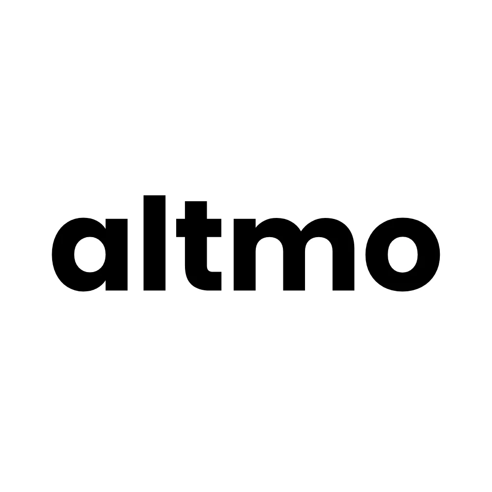
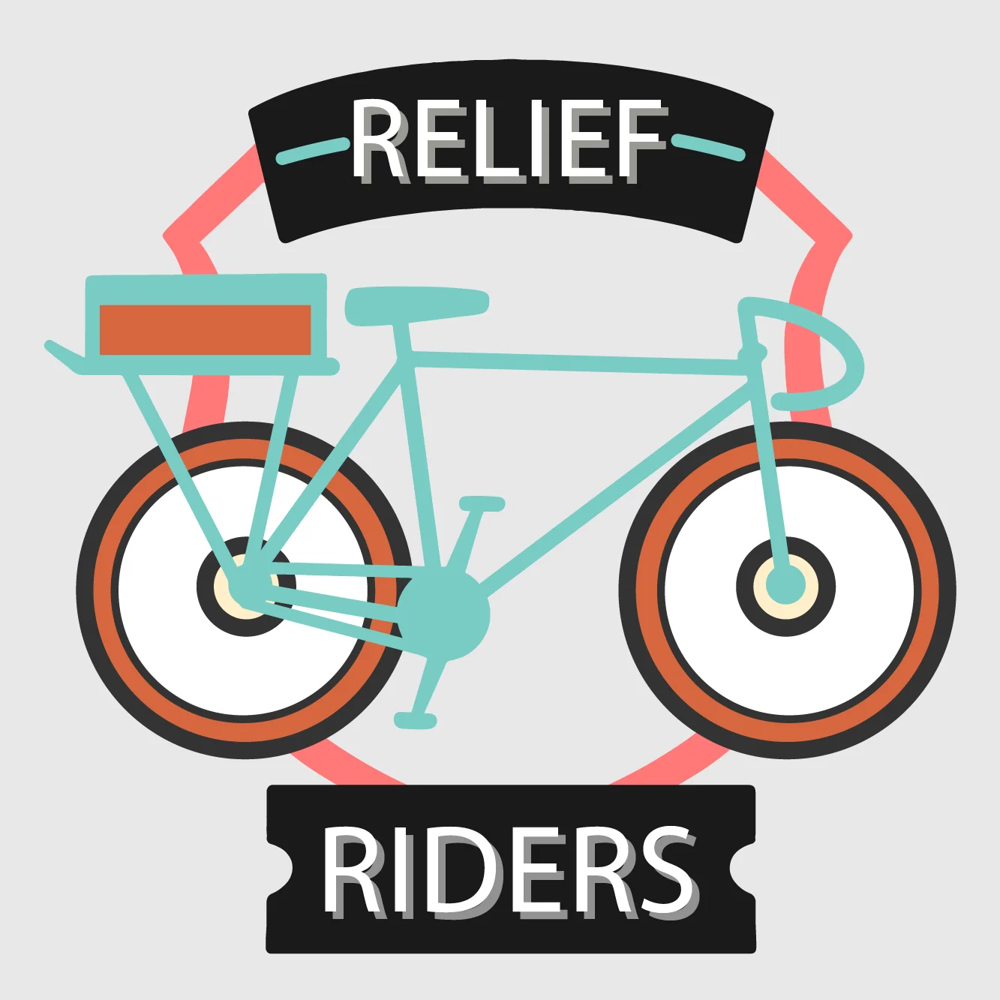

Impact & Work

AltMo
Gamified mobility intelligence platform driving 342% increase in cycling infrastructure allocation and helping cities become climate-friendly.
Visit AltMo →

Relief Riders
COVID pandemic initiative that spread across 12 cities with 600+ volunteers, winning UN World Bicycle Day Award and Nobel Peace Prize nomination.
Learn More →Break the Block
Field guide chronicling a decade-long citizen campaign that brought commuter rail to Bengaluru. 90 lessons for change-makers.
Read the Book →OoruLabs Podcast
India's premiere urban affairs podcast exploring cities, governance, infrastructure, and civic engagement through in-depth conversations.
Listen Now →